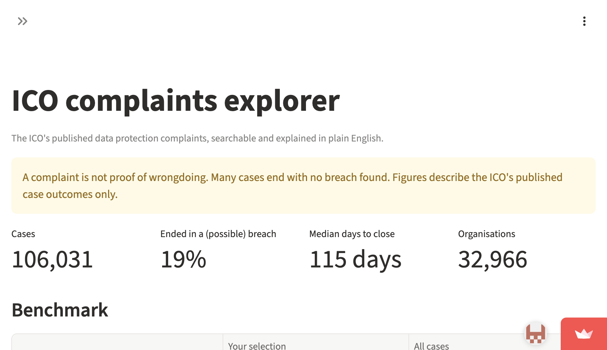

107,167 unique published ICO case records, compiled from eight source CSVs, standardised and deduplicated. Search online for free, or download the complete CSV for £4.99.
An independent Rowcraft compilation of ICO-published complaint and case records—not an official ICO product.

Practical data products built around real questions
Search and filter public records through tools designed around the questions people actually need to answer.
Bring scattered sources into cleaner, consistent datasets that are easier to explore, analyse and share.
Use clear records, comparisons and focused research to support due diligence, reporting and better-informed decisions.
Search published complaint and case records by organisation, sector, outcome and completion date. Rowcraft combines eight ICO source files into one standardised, deduplicated dataset; the complete 107,167-record CSV saves you collecting and joining the files yourself.
Explore the database online for free, or download the CSV in a ZIP archive for £4.99 once, including applicable tax.
Get the complete database — £4.99 → See sources & methodologyThe records describe published ICO complaint-case work. A complaint or case outcome is not proof of wrongdoing, and the number of complaints is not a compliance score. Read the sources and methodology.
Identify the public information that can help answer a real research, company or sector question.
Collect, organise and standardise records so they are easier to search, compare and analyse.
Turn the data into searchable tools, clean exports or focused research that supports the next decision.
Exploring new sources and ways to answer real-world questions
Explore how Companies House and other public sources can add context to organisation-level research.
Bring public records together to make patterns, comparisons and research questions easier to investigate.
Tell Rowcraft what you are trying to understand. We can explore the available sources and the most useful output for your work.